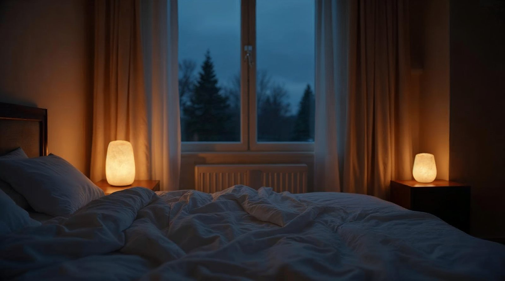
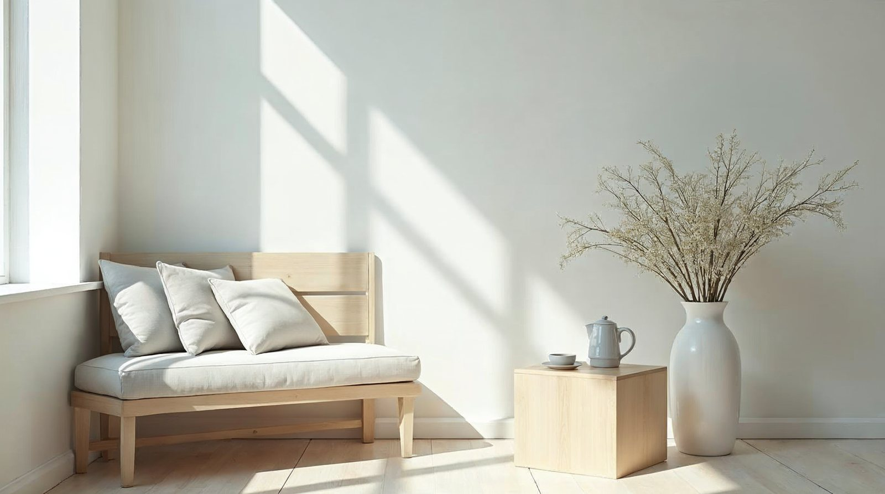
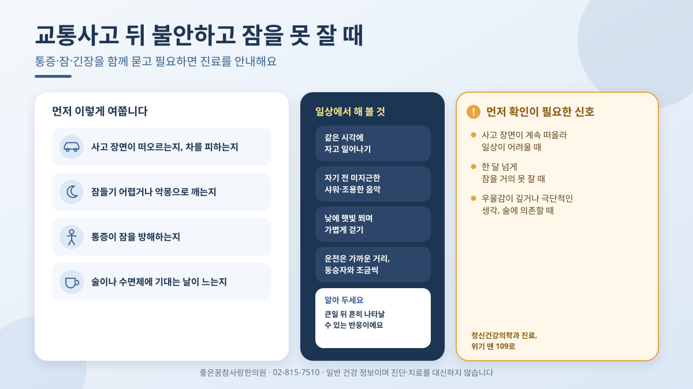

이종호 한의사 감수좋은꿈참사랑한의원 대표원장 (한의사 면허번호 19769)발행 2026-11-26 · 수정 2026-11-26
이 글의 차례
밤 열두 시가 훌쩍 넘었는데 눈이 말똥말똥합니다. 겨우 잠이 들었나 싶으면 끼익 하는 브레이크 소리에 놀라 깨고, 다시 눈을 감으면 그날 앞 유리 너머 장면이 떠오릅니다. 목은 아직 뻐근하고, 돌아누울 때마다 허리가 걸립니다.
아침이 되면 출근 준비를 해야 하는데, 운전석에 앉을 생각만 해도 가슴이 두근거립니다. 결국 오늘도 택시를 부르고, 뒷좌석에 앉아서도 앞차와의 거리를 자꾸 눈으로 재게 됩니다.
진료실에서 이런 이야기를 조심스럽게 꺼내시는 분이 많습니다. 몸이 아픈 건 말하기 쉬운데, 마음이 놀라 있다는 건 어쩐지 말하기 부끄럽다고 하십니다. 큰 사고도 아니었는데 내가 너무 예민한 건 아닌지, 이러다 영영 운전을 못 하는 건 아닌지 걱정도 하십니다.
그 마음을 약하다고 여기지 않으셨으면 합니다. 큰일을 겪은 몸과 마음이 아직 놀라 있는 것이니까요. 밤마다 같은 장면을 다시 겪으며 혼자 버티셨을 시간을 생각하면, 여기까지 버텨 오신 것만으로도 애쓰셨다는 말씀을 먼저 드리고 싶습니다.
먼저 답부터 드리겠습니다. 사고 뒤 장면이 떠오르고, 차를 타기 무섭고, 잠들기 어렵거나 악몽에 깨는 것은 큰일을 겪은 뒤 흔히 나타날 수 있는 반응입니다. 시간이 지나며 차츰 가라앉는 경우가 많지만, 통증이 잠을 깨우고 모자란 잠이 불안을 키우는 고리가 생기기 쉬워 통증과 잠, 긴장을 함께 살핍니다.
이런 상태가 한 달 넘게 이어지거나, 그 전이라도 일상이 무너질 만큼 힘드시면 정신건강의학과 같은 전문 진료를 함께 받으시길 권합니다. 마음이 너무 힘들어 극단적인 생각까지 든다면 혼자 견디지 마시고 109에 바로 연락하세요.
왜 사고 뒤에 불안하고 잠을 못 이룰까요
사람이 크게 놀라면 몸은 위기를 넘기려고 온 힘을 모읍니다. 심장이 빨리 뛰고, 근육이 바짝 긴장하고, 작은 소리에도 귀가 곤두섭니다. 사고 순간에는 이 반응이 나를 지켜 주지만, 위기가 지나간 뒤에도 한동안 쉽게 내려가지 않는 경우가 있습니다.
그러면 잠자리에 누워도 몸이 경계를 풀지 못합니다. 잠들기 어렵고, 겨우 든 잠도 얕아 작은 소리에 깹니다. 낮에 비슷한 소리를 듣거나 사고 난 길을 지나면 몸이 그날처럼 다시 움찔하기도 합니다.
통증도 한몫합니다. 목이나 허리가 아파 돌아누울 때마다 깨고, 잠이 모자라면 같은 통증도 더 크게 느껴집니다. 통증 때문에 잠을 못 자고, 잠을 못 자서 통증이 더 심해지는 고리가 생기는 것이지요.
사고 뒤에 몰리는 일들도 마음을 붙잡습니다. 보험사와 통화하고, 차를 맡기고, 회사에 사정을 이야기하는 사이 정작 내 몸을 돌볼 틈이 없습니다. 이런 걱정이 잠자리까지 따라 들어오면 생각이 꼬리를 물기 쉽습니다.
- 위기를 넘긴 뒤에도 쉽게 내려가지 않는 몸의 긴장
- 사고 장면과 소리가 떠오를 때 그날처럼 다시 놀라는 몸
- 통증이 잠을 깨우고, 모자란 잠이 통증과 불안을 키우는 고리
- 보험과 일, 차 수리처럼 사고 뒤 한꺼번에 몰리는 걱정
한의학에서는 잠을 낮과 밤의 리듬, 몸의 온기와 소화, 마음의 긴장이 함께 만든 결과로 봅니다. 그래서 크게 놀란 뒤 가슴이 두근거리고 쉽게 놀라는지, 속이 막힌 듯 답답한지, 손발이 차가워졌는지를 함께 여쭙습니다.
몸이 놀란 것과 마음이 놀란 것은 함께 갑니다
사고 뒤 오시는 분들 가운데에는 통증은 조금씩 가라앉는데 오히려 마음이 쉽게 가라앉지 않는다는 분이 계십니다. 교차로에서 옆 차가 다가오면 몸이 먼저 움찔하고, 뒷좌석에 타도 발에 저절로 힘이 들어간다고 하십니다.
저는 이것도 사고가 남긴 흔적이라고 봅니다. 아픈 곳이 덜해졌다면 그다음엔 하루가 예전의 리듬으로 돌아왔는지도 함께 봐 주셨으면 합니다. 밥맛이 돌아왔는지, 밤에 몇 번 깨는지, 다시 운전대를 잡을 마음이 드는지요.
사고 전부터 잠이 얕았거나 마음 쓸 일이 많던 시기였다면, 사고가 그 약한 고리를 먼저 흔들기도 합니다. 사고와 원래의 몸 상태가 섞여 있는 셈이지요. 제가 사고 전에는 잠이 어땠는지 함께 여쭙는 까닭입니다.
사고 직후 며칠에서 몇 주 사이 잠과 마음이 흔들리는 것은 드물지 않습니다. 첫 주에 장면이 떠오른다고 너무 겁먹지 않으셨으면 합니다. 다만 시간이 지나도 줄지 않고 오히려 다니는 곳이 점점 좁아진다면, 그때는 혼자 견딜 일이 아니라 도움을 받을 일입니다.
먼저 이렇게 여쭙니다
처음 오시면 아픈 곳 이야기와 함께 이런 것을 천천히 여쭙습니다. 사고 순간을 다시 떠올리는 게 힘드시면 말씀해 주세요. 나누어서 여쭙겠습니다.
- 잠들기 어려운지, 자다가 자주 깨는지, 새벽에 일찍 깨는지, 악몽을 꾸는지
- 사고 장면이나 소리가 갑자기 떠오르는지, 차나 그 길을 피하게 되는지
- 통증 때문에 깨는지, 깨고 나서 아픈지
- 사고 전 잠은 어땠는지, 지금 상태가 얼마나 이어졌는지
- 술이나 수면제에 기대는 날이 늘었는지
- 밥맛과 소화, 가슴 두근거림, 손발이 차가워졌는지
통증 때문에 깨는지, 깨고 나서 아픈지를 나누어 여쭙는 데에는 이유가 있습니다. 겉보기엔 비슷한 말이지만, 앞의 경우라면 통증과 잠자리 자세를 먼저 살피고, 뒤의 경우라면 잠을 깨우는 긴장을 먼저 살피게 됩니다.

예를 들어 이런 경우가 있습니다
예를 들어 사고 뒤 운전석에 앉으면 가슴이 두근거리고 손에 땀이 나는 직장인이라면, 통증과 함께 잠과 긴장을 여쭙습니다. 당분간은 무리해서 운전대를 잡기보다 대중교통을 이용하시고, 다시 시작할 때는 가까운 거리부터 동승자와 함께 해 보시길 권합니다.
예를 들어 허리 통증 때문에 돌아누울 때마다 깨고, 그 뒤로 사고 장면이 떠올라 다시 잠들지 못하는 분이라면 통증 부위와 잠자리 자세를 먼저 살핍니다. 통증이 깨우는 잠과 장면이 깨우는 잠은 조금 다르게 다루기 때문입니다.
예를 들어 사고 뒤 입맛이 없고 속이 늘 막힌 듯 답답한 분이라면, 잠과 함께 소화와 몸의 긴장을 여쭙고 배를 살펴보기도 합니다. 긴장이 오래 이어지면 소화가 더디고 잠이 얕아지는 경우가 있어서입니다.
스스로 점검해 보세요
- 사고 장면이나 소리가 원치 않는데도 자꾸 떠오른다
- 차를 타거나 사고 난 길, 비슷한 교차로를 피하게 된다
- 잠들기까지 30분 넘게 걸리거나 밤에 여러 번 깬다
- 악몽을 꾸거나 작은 소리에도 깜짝 놀라 깬다
- 통증 때문에 잠을 설친다
- 술이나 수면제에 기대는 날이 늘었다
- 이런 상태가 한 달 넘게 이어지고 있다
여러 항목에 해당하고 일과 집안일이 손에 잡히지 않을 만큼 힘들다면, 한의원 진료와 함께 정신건강의학과 진료도 받아 보시길 권합니다. 두 곳을 함께 다니는 것은 이상한 일이 아닙니다.
사고 뒤 며칠, 몇 주, 한 달, 시기별로 살필 것
사고 뒤 며칠은 몸도 마음도 가장 놀라 있는 때입니다. 이 시기에 잠이 얕고 장면이 떠오르는 것은 이상한 일이 아닙니다. 잠을 억지로 맞추려 애쓰기보다 끼니를 거르지 않고, 따뜻한 물로 씻고, 일찍 누워 몸을 쉬게 해 주세요.
통증이 심해 잠을 못 이룬다면 통증부터 살펴야 합니다. 병원에서 받은 진통제가 있다면 처방받은 대로 드시고, 드신 날과 횟수를 적어 두세요. 처방한 의사와 상의할 때 필요합니다.
첫 주를 지나 두세 주 사이에는 몸의 통증이 조금씩 가라앉으면서 오히려 마음의 놀람이 또렷해지기도 합니다. 이 무렵부터 잠든 시각과 깬 횟수, 장면이 떠오른 상황을 하루 한 줄씩 적어 보세요. 2주쯤 적으면 어떤 날 더 힘든지 흐름이 보입니다.
사고 뒤 처음 몇 주는 몸도 마음도 아직 출렁이는 때입니다. 그래서 저는 이 무렵 통증만 보고 지나가기보다 잠과 긴장도 같이 살펴 두자고 말씀드립니다. 회복되는 속도는 사람마다 달라 기간이나 결과를 미리 정해 말씀드리지는 않습니다.
한 달이 지나도 장면이 자꾸 떠오르고 운전이나 외출을 피하게 되거나, 잠을 거의 못 자는 날이 이어진다면 정신건강의학과 진료를 받아 보시길 권합니다. 꼭 한 달을 기다리실 필요는 없습니다. 그 전이라도 일상이 무너질 만큼 힘들다면 그때가 도움을 청하실 때입니다.
일상에서 먼저 해 볼 수 있는 것
- 잠드는 시각보다 일어나는 시각을 먼저 매일 같게 맞추기
- 끼니 시간을 일정하게 두고, 저녁은 잠들기 3시간 전쯤 가볍게 마치기
- 낮에 햇빛을 쬐며 20~30분 걷고, 오후 2시 이후에는 커피 줄이기
- 잠들기 1~2시간 전 따뜻한 물로 샤워하거나 몸을 담그기
- 장면이 떠오르면 발바닥을 바닥에 붙이고, 편하게 들이쉰 뒤 조금 길게 내쉬기(어지러우면 바로 멈추기)
- 20분 넘게 잠이 안 오면 잠시 일어나 어두운 곳에서 쉬다가 졸릴 때 다시 눕기
술 한 잔이 긴장을 풀어 준다고 여기기 쉽지만, 술은 잠을 얕게 하고 새벽에 깨게 만들 수 있습니다. 잠을 거의 못 잔 날이나 수면제를 드신 다음 날 아침 졸음이 남아 있다면 운전대를 잡지 마세요.
운전을 다시 시작할 때는 서두르지 않으셔도 됩니다. 밝은 낮 시간, 익숙하고 한적한 길, 가까운 거리부터 믿을 만한 사람과 함께 타서 조금씩 늘려 보세요. 다녀온 날 밤 잠이 어땠는지도 적어 두시면 다음 걸음을 정하기 쉽습니다.
혼자 끙끙 앓기보다 가까운 사람에게 나 아직 좀 놀라 있다고 말하는 것만으로도 조금은 덜어집니다. 곁에 있는 가족은 해결책을 먼저 말하기보다 이야기를 끝까지 들어 주시고, 밤에 잠을 설치는지 함께 지켜봐 주세요.
한의원에서 함께 살필 수 있는 경우
병원에서 급한 문제가 없다는 확인을 받으셨는데도 이런 불편이 이어진다면 한의원에서 함께 살펴볼 수 있습니다.
- 목·허리 통증과 근육 긴장 때문에 자다가 자주 깨는 경우
- 사고 뒤 소화가 안 되고 가슴이 두근거리며 몸이 늘 긴장된 느낌인 경우
- 사고 뒤 밥때와 잠때가 흐트러져 하루 리듬이 무너진 경우
- 정신건강의학과 진료를 받으면서 몸의 통증과 잠도 함께 살피고 싶은 경우
정신건강의학과 치료를 받고 계시다면 그 치료를 이어 가는 것이 먼저입니다. 드시는 약은 그대로 유지하시고 진료 때 알려 주세요. 약 조절은 처방한 의사와 상의해서 정합니다.

처음 오시면 이렇게 진료합니다
좋은꿈참사랑한의원에 처음 오시면 사고 경위와 지금 가장 힘든 점을 먼저 충분히 듣습니다. 다른 병원에서 받은 검사 결과와 드시는 약, 특히 수면제나 안정제가 있다면 약 봉투나 처방전 사진을 함께 보여 주세요.
그다음 양손을 내어 달라고 말씀드립니다. 저는 처음 오신 분이든 다시 오신 분이든 맥부터 짚습니다. 손목을 짚는 동안에는 말씀을 조금 더 들을 수 있어서, 잠은 어떻게 드시는지, 꿈은 어떤지, 밥맛과 속은 괜찮은지 천천히 여쭙습니다.
필요하다고 판단되면 혀를 보고 배를 살펴 긴장의 정도를 가늠합니다. 숨을 쉴 때 배가 얼마나 부드럽게 움직이는지 보면, 평소 긴장한 채 얕게 숨을 쉬는지 짐작하는 데 참고가 됩니다. 아픈 곳이 있으면 직접 움직여 보시게 하고 누르면 아픈 자리를 확인합니다.
그런 뒤 통증과 잠, 생활 리듬 가운데 무엇부터 다룰지 함께 정합니다. 오늘 무엇을 왜 하는지 먼저 말씀드리고, 상태에 따라 통증 부위의 침이나 약침, 추나, 물리치료를 정하며, 필요하다고 판단될 때 한약 상담을 이어 갑니다.
치료받는 동안 자세나 온도, 자극이 불편하시면 언제든 말씀해 주세요. 아파서 오시는 곳이지만, 머무시는 동안만큼은 잘 쉬다 가시는 곳이었으면 합니다. 다시 오시면 지난번에 이야기 나눈 잠과 긴장부터 이어서 여쭙습니다.
자동차보험 처리 여부와 접수 방법은 상황마다 다를 수 있어 보험사 담당자에게 먼저 확인하시고, 한의원 접수에 필요한 것은 방문 전 전화(02-815-7510)로 확인해 주세요.
이렇게 기록해 오시면 상담이 쉬워집니다
- 사고 일시와 지금까지 받은 진료 기록
- 잠든 시각, 깬 횟수와 시각, 악몽이 있었던 날
- 사고 장면이 떠오르거나 불안이 심했던 상황(운전, 도로, 소리)
- 통증이 잠을 깨운 날과 그때 아팠던 자리
- 드시는 약 전부(수면제·진통제 포함)와 술을 마신 날
예를 들면 이런 한 줄이면 충분합니다. "새벽 2시에 깸, 브레이크 소리 꿈. 다시 잠드는 데 한참 걸림." "퇴근길 택시, 교차로에서 가슴 두근거림." 이런 기록이 쌓이면 어떤 날이 더 힘든지, 무엇부터 손볼지 함께 보기가 쉬워집니다.
이런 증상은 먼저 확인이 필요합니다
- 죽고 싶다는 생각이 들거나 스스로를 해칠 것 같은 경우(☎ 109에 바로 연락)
- 사고 장면이 계속 떠올라 일과 집안일, 외출이 어려운 경우
이런 신호가 있으면 한의원보다 가까운 병원이나 응급실을 먼저 찾으세요.
마치며
사고는 몇 초 만에 지나갔는데, 그 뒤의 밤은 길게 이어집니다. 주변에서는 차가 얼마나 망가졌는지를 묻는데, 정작 나는 밤마다 그 순간을 다시 겪고 있으니 얼마나 외로우셨을까 싶습니다.
오늘 밤 당장 푹 주무시지 못해도 괜찮습니다. 일어나는 시각 하나 지키기, 낮에 잠깐 걷기, 나 아직 놀라 있다고 한 사람에게 말하기. 그중 하나만 해 보셔도 충분합니다.
다음에 오시면 저는 요즘 몇 시쯤 잠이 드시는지, 그리고 밤에 몇 번 깨시는지부터 여쭙겠습니다.
함께 읽으면 좋은 글
- 교통사고 뒤 운전이 무섭고 장면이 떠오를 때는 어떻게 지내면 되나요?
- 걱정이 많아서 잠이 안 올 때는 어떻게 살피나요?
- 교통사고 뒤 목과 허리가 아플 때 어떤 순서로 살피고 무엇을 준비하나요?

여쭙는 것
- 잠들기 어려운지, 자다가 자주 깨는지, 새벽에 일찍 깨는지, 악몽을 꾸는지
- 사고 장면이나 소리가 갑자기 떠오르는지, 차나 그 길을 피하게 되는지
- 통증 때문에 깨는지, 깨고 나서 아픈지
생활에서 해 볼 것
- 잠드는 시각보다 일어나는 시각을 먼저 매일 같게 맞추기
- 끼니 시간을 일정하게 두고, 저녁은 잠들기 3시간 전쯤 가볍게 마치기
- 낮에 햇빛을 쬐며 20~30분 걷고, 오후 2시 이후에는 커피 줄이기
한의원에서 함께 살필 것
- 목·허리 통증과 근육 긴장 때문에 자다가 자주 깨는 경우
- 사고 뒤 소화가 안 되고 가슴이 두근거리며 몸이 늘 긴장된 느낌인 경우
- 사고 뒤 밥때와 잠때가 흐트러져 하루 리듬이 무너진 경우
먼저 확인이 필요한 신호
- 죽고 싶다는 생각이 들거나 스스로를 해칠 것 같은 경우(109에 바로 연락)
- 사고 장면이 계속 떠올라 일과 집안일, 외출이 어려운 경우
한눈에 보는 표
| 구분 | 핵심 |
|---|---|
| 여쭙는 것 | 잠들기 어려운지, 자다가 자주 깨는지, 새벽에 일찍 깨는지, 악몽을 꾸는지 사고 장면이나 소리가 갑자기 떠오르는지, 차나 그 길을 피하게 되는지 |
| 생활에서 해 볼 것 | 잠드는 시각보다 일어나는 시각을 먼저 매일 같게 맞추기 끼니 시간을 일정하게 두고, 저녁은 잠들기 3시간 전쯤 가볍게 마치기 |
| 한의원에서 함께 살필 것 | 목·허리 통증과 근육 긴장 때문에 자다가 자주 깨는 경우 사고 뒤 소화가 안 되고 가슴이 두근거리며 몸이 늘 긴장된 느낌인 경우 |
| 먼저 확인이 필요한 신호 | 죽고 싶다는 생각이 들거나 스스로를 해칠 것 같은 경우(109에 바로 연락) 사고 장면이 계속 떠올라 일과 집안일, 외출이 어려운 경우 |
자주 묻는 질문
사고 뒤 불안하고 잠을 못 자는 것도 한의원에서 상담하나요?
네. 통증과 함께 잠과 긴장, 소화와 생활 리듬을 함께 살핍니다. 불안이 깊고 일상이 어려울 정도라면 정신건강의학과 진료도 함께 받으시도록 안내합니다.
수면제를 먹고 있는데 진료받아도 되나요?
받으실 수 있습니다. 드시는 약은 임의로 줄이거나 끊지 마시고, 조절이 필요하면 처방한 의사와 상의하세요. 약 이름을 알려 주시면 함께 확인합니다.
시간이 지나면 저절로 괜찮아지지 않나요?
사고 뒤 몇 주 사이 잠과 불안이 흔들리다가 차츰 가라앉는 분도 많습니다. 다만 한 달 넘게 이어지거나 일상이 어려울 만큼 힘들다면 참기보다 도움을 받으시는 편이 좋습니다.
운전은 언제 다시 해도 되나요?
몸의 통증과 졸음, 마음의 긴장을 함께 보아야 해서 날짜를 정해 말씀드리기는 어렵습니다. 다시 시작할 때는 밝은 낮, 가까운 거리부터 동승자와 함께 조금씩 늘려 보시고, 잠을 못 잤거나 약 때문에 졸린 날은 운전하지 마세요.
술을 조금 마시면 잠드는 데 도움이 되지 않나요?
술은 잠드는 것을 거드는 듯해도 잠을 얕게 하고 새벽에 깨게 만들 수 있습니다. 술에 기대는 날이 늘었다면 진료 때 편하게 말씀해 주세요.
좋은꿈참사랑한의원은 재진 때 지난번 이야기부터 이어서 여쭙니다. 진료시간과 예약은 오시는 길에서 확인하세요.
어디서 상담받을 수 있나요?
좋은꿈참사랑한의원은 서울 동작구 만양로2길 2 신성빌딩 3층·5층(서울 동작구 상도동, 7호선 상도역 3번 출구 근처)에 있습니다. 한의사 3명(이종호 대표원장, 조영기 수석진료원장, 정원영 진료원장)이 진료합니다. 진료시간은 평일 09:30~20:00(점심 13:00~14:00), 토·일·공휴일 09:30~15:00이며, 방문 전 전화로 확인을 권합니다. 예약은 네이버 예약, 카카오톡 상담, 전화 02-815-7510로 받습니다.
이 글은 일반적인 건강 정보이며 개인의 진단이나 치료를 대신하지 않습니다. 증상이 있거나 복용 중인 약이 있다면 진료를 통해 확인하세요. 치료 효과는 개인마다 다를 수 있습니다.
작성 기준: 일반적으로 알려져 있는 건강 정보를 참고해 정리했습니다(대표원장 감수). 증상 기록은 1~2주 동안 하루 1회, 비슷한 시간에 적어 오시면 지난 상태와 비교하기 쉽습니다.